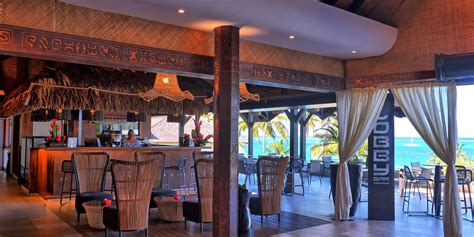
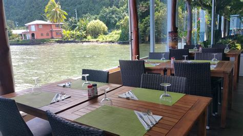
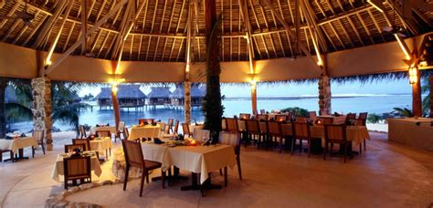
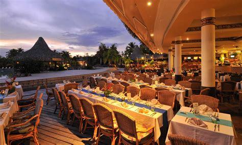
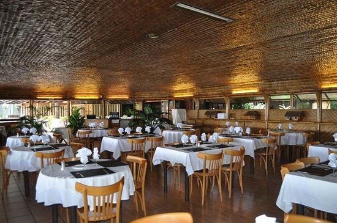
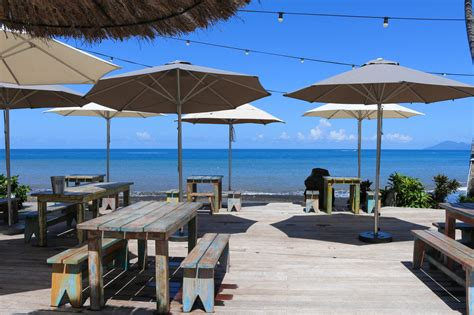

Restaurants in Taniti
Taniti's restaurants offer more than just a meal; they're sensory journeys. Beachfront shacks sizzle with the day's catch, laughter mingling with the ocean's rhythm. Hidden jungle cafes, adorned with fragrant orchids, whisper tales in lemongrass tea. Earthy "umu" steams from underground ovens, sharing the stage with vibrant stir-fries and Polynesian curries. Each bite sings with the island's soul, from reef-fresh seafood to starfruit bursts. Forget fancy plates; these are adventures on a plate.

Mana Kai

Te Moana's Bounty

Le Cocotier

Taniti Grill

Te Manu's Nest
